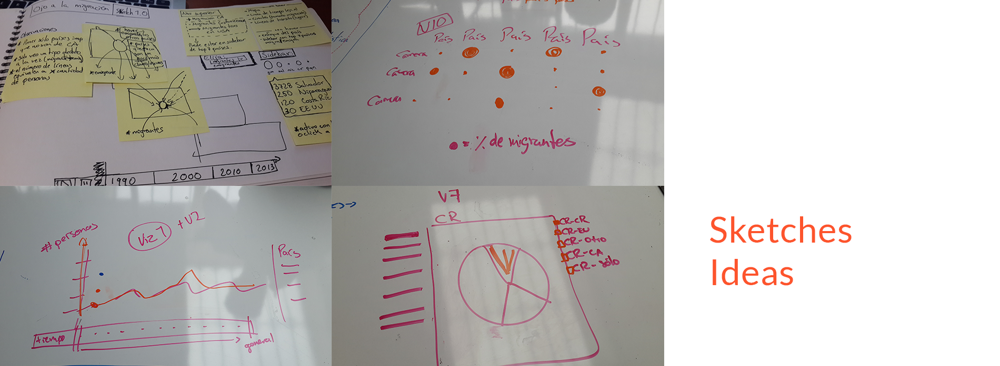
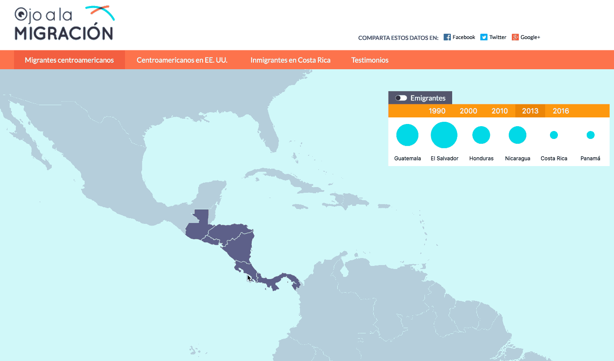
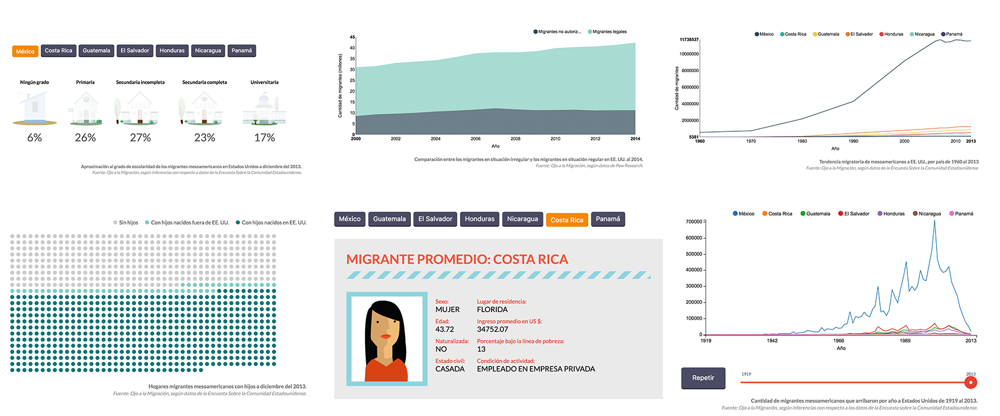

Ojo a la Migración - Dataviz
Hivos wanted to communicate how migration has been in Central America in the last decades, so we partnered with a newspaper (Semanario Universidad) to create a compelling story of the region's migration.
What I did
We created an interactive map that showed where and how many people were migrating to and from Central America. We also created multiple visualizations that explained other related data about migration: education, language, health, work, etc.
It's simple to say it, but to actually create a compelling story of huge amounts of data, I needed to work closely with the researchers and data analysts to understand the data and know it's limitations and possibilities.

As a team, we went over the possible ways to graph the information while not losing our users on all the data we had. I created a sketch which we used as a base and then iterated on it, improving the data we were showing users and also the interaction.

Key tools and deliverables
- Sketches
- Prototype
Results

This website will be available soon for the public, but it's live on the newspaper website now.